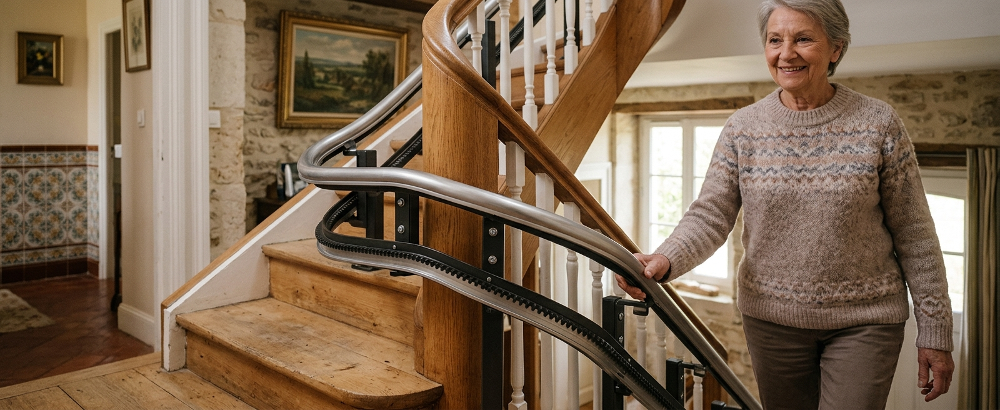

Les fourchettes de prix par type de monte-escalier
Estimations nationales 2026Il n’existe pas de « prix moyen » fiable d’un monte-escalier : deux installations dans la même rue peuvent varier du simple au triple selon la forme de l’escalier. Les fourchettes ci-dessus couvrent la grande majorité des devis constatés en France métropolitaine, matériel et pose compris, hors options haut de gamme.
Que payez-vous exactement ? Matériel, pose et le reste
Un devis de monte-escalier regroupe toujours trois familles de coûts. Les distinguer vous permet de comparer des devis qui ne présentent pas les mêmes lignes.
Rail, siège, motorisation et batteries. C’est la part qui varie le plus : un rail cintré bi-tube peut coûter à lui seul plus cher qu’un appareil droit complet.
Fixation du rail sur les marches, réglages, essais et prise en main. Une demi-journée à une journée pour un droit, jusqu’à deux jours pour un tournant complexe.
Prise électrique à créer près de l’escalier (150 – 500 €), retrait d’une rampe, découpe de moquette, ou renfort ponctuel d’une marche fragile.
Bon à savoir — le rail se fixe sur les marches, pas sur le mur. Il n’y a donc généralement ni maçonnerie ni reprise de cloison à budgéter, même dans un logement ancien.
Le rail : pourquoi il fait doubler le prix
Sur un escalier droit, le rail est un profilé standard coupé à la longueur de votre volée : il est produit en série, disponible rapidement, et sa pose est prévisible. Dès qu’un virage, un quart tournant ou un palier intermédiaire apparaît, le rail doit épouser la courbe exacte de votre escalier : il est alors cintré sur mesure en usine, d’après un relevé laser effectué chez vous.
Cette fabrication sur mesure a trois conséquences directes sur le budget : un coût matière et main-d’œuvre plus élevé, un délai de fabrication de plusieurs semaines, et un rail invendable ailleurs — ce qui explique aussi pourquoi le marché de l’occasion est quasi inexistant pour les modèles tournants. Chaque palier supplémentaire ajoute des mètres de rail et des courbes : comptez un surcoût sensible par niveau desservi au-delà du premier étage.
Vous hésitez sur la catégorie de votre escalier ? Notre guide Monte-escalier droit ou tournant : comment choisir ? vous aide à identifier votre configuration en quelques minutes.
Options : lesquelles valent leur prix ?
Les options représentent en général 300 à 1 200 € d’écart entre deux devis pour le même appareil. Certaines relèvent du confort, d’autres de la sécurité au quotidien :
- ·Siège pivotant motorisé — souvent le plus utile : il permet de descendre du siège face au palier, dos à l’escalier, sans torsion du buste.
- ·Rail relevable — indispensable quand le rail arriverait devant une porte en bas de l’escalier ; la portion basse se replie pour libérer le passage.
- ·Deux télécommandes d’appel — pour rappeler le siège depuis le haut ou le bas ; souvent incluses, à vérifier sur le devis.
- ·Siège élargi ou renforcé — à dimensionner lors de la visite technique, pas après coup.
- ·Sellerie, coloris, finitions — purement esthétiques : c’est ici qu’un devis peut gonfler sans bénéfice d’usage.
Les détecteurs d’obstacles, la ceinture de sécurité et le fonctionnement sur batterie en cas de coupure de courant sont aujourd’hui présents sur la plupart des appareils récents : ils ne devraient pas être facturés en supplément — si c’est le cas, demandez pourquoi.
Après l’achat : garantie, entretien, batteries
Le prix d’usage d’un monte-escalier ne s’arrête pas à la facture d’installation. Trois postes sont à anticiper sur la durée de vie de l’appareil (10 à 15 ans en usage normal) :
- ·Garantie — généralement 2 ans pièces et main-d’œuvre, parfois extensible. Vérifiez ce qui est couvert : moteur, rail, batteries et déplacements ne le sont pas toujours ensemble.
- ·Contrat d’entretien — proposé entre 100 et 250 € par an environ : une visite annuelle de contrôle et une priorité d’intervention en cas de panne. Facultatif mais recommandé passé la garantie.
- ·Batteries — à remplacer tous les 3 à 5 ans selon l’usage, pour un coût généralement compris entre 100 et 300 €.
Location et occasion : de vraies économies ?
Pour un besoin temporaire — convalescence après une opération, par exemple — la location d’un modèle droit (installation, entretien et retrait inclus) évite d’immobiliser plusieurs milliers d’euros. Au-delà de 12 à 18 mois d’usage, l’achat redevient presque toujours plus économique.
L’occasion et le reconditionné ne fonctionnent en pratique que pour les escaliers droits, dont le rail standard est recoupable. Un rail tournant, cintré pour un escalier précis, n’est réutilisable que si votre escalier a exactement la même géométrie — ce qui est rarissime. Notre guide Occasion ou location : quelles alternatives à l’achat ? détaille les vérifications indispensables (garantie, dépose, repose, responsabilité de la pose).
Les aides qui peuvent réduire la facture
Le monte-escalier fait partie des équipements d’adaptation du logement pouvant ouvrir droit à des aides, sous conditions. Les principales portes d’entrée :
- ·MaPrimeAdapt’ — jusqu’à 50 % ou 70 % des dépenses éligibles selon les ressources, dans la limite de 22 000 € de travaux. Conditions et démarches →
- ·APA ou PCH — l’aménagement du logement peut être intégré au plan d’aide, selon votre situation d’autonomie ou de handicap.
- ·Caisses de retraite, aides locales, dispositifs fiscaux — compléments possibles selon votre caisse, votre département et la réglementation en vigueur.
Attention — pour la plupart des aides, les travaux ne doivent pas commencer avant l’accord. Signez le devis « sous réserve d’obtention des aides » et vérifiez les conditions d’annulation. Notre guide Quelles aides pour un monte-escalier ? détaille chaque dispositif et l’ordre des démarches.
Trois exemples de budgets
Scénarios fictifs à titre pédagogique — montants indicatifs, chaque projet réel passe par un devis après visite technique.
Appareil droit avec siège pivotant, prise existante. Devis type : 3 800 €. Sans aide mobilisée : reste à charge identique.
Rail cintré sur mesure, rail relevable en bas. Devis type : 8 900 €. Ménage modeste éligible MaPrimeAdapt’ (50 %) : reste à charge ≈ 4 450 €.
Modèle extérieur droit, housse, prise à créer. Devis type : 5 200 €. Ménage très modeste éligible (70 %) : reste à charge ≈ 1 560 €.
Comment lire un devis de monte-escalier
Un devis sérieux est établi après visite et prise de mesures, jamais par téléphone. Avant de signer, vérifiez que ces sept éléments y figurent noir sur blanc :
- ✓Marque et référence exacte de l’appareil
- ✓Type de rail (standard ou sur mesure) et longueur
- ✓Liste des options incluses, ligne par ligne
- ✓Coût de la pose et travaux annexes chiffrés
- ✓Durée et périmètre exact de la garantie
- ✓Délai de livraison et de pose
- ✓Mention « sous réserve d’obtention des aides » si dossier en cours
Trois questions utiles à poser au professionnel : quel est le délai d’intervention en cas de panne ? Les batteries et déplacements sont-ils couverts par la garantie ? Que devient l’appareil (rachat, retrait) quand il ne sert plus ?
Obtenez un chiffrage adapté à votre escalier
Décrivez votre escalier en 2 minutes : si un professionnel indépendant intervient dans votre secteur, il peut vous recontacter pour établir un devis après visite. Gratuit et sans engagement.
Questions fréquentes sur le prix
Quel est le prix d’un monte-escalier pour un escalier droit ?
Entre 2 500 et 5 500 € installé, en estimation nationale 2026. Le bas de la fourchette correspond à un appareil simple sans option sur une volée courte ; le haut à un modèle équipé (siège pivotant, rail relevable) sur une longue volée.
Pourquoi un monte-escalier tournant coûte-t-il deux fois plus cher ?
Parce que son rail est cintré sur mesure en usine d’après un relevé précis de votre escalier. Cette fabrication unique coûte plus cher, prend plusieurs semaines et rend le rail inutilisable ailleurs.
La pose est-elle comprise dans les prix annoncés ?
Dans les fourchettes de ce guide, oui. Sur les devis, pas toujours : la pose représente 800 à 2 000 € et doit apparaître en ligne distincte. Un prix « matériel seul » n’est pas comparable à un prix posé.
Y a-t-il des frais après l’installation ?
Oui, trois postes : l’électricité consommée (quelques euros par an), les batteries à remplacer tous les 3 à 5 ans (100 – 300 €), et éventuellement un contrat d’entretien annuel (100 – 250 € environ).
MaPrimeAdapt’ peut-elle financer un monte-escalier ?
Oui, le monte-escalier fait partie des équipements éligibles. L’aide couvre 50 % ou 70 % des dépenses retenues selon vos ressources, dans la limite de 22 000 € de travaux, sous conditions d’âge ou d’autonomie. Voir les conditions.
Un monte-escalier d’occasion est-il une bonne affaire ?
Uniquement pour un escalier droit, et à condition de savoir qui assure la dépose, la repose et la garantie. Pour un escalier tournant, le rail sur mesure rend l’occasion pratiquement impossible.
Combien coûte la location d’un monte-escalier ?
La location concerne surtout les modèles droits, avec des frais d’installation initiaux puis un loyer mensuel. Elle devient moins intéressante que l’achat au-delà de 12 à 18 mois d’usage : faites le calcul sur la durée prévisible du besoin.
Le prix dépend-il du poids ou de la taille de l’utilisateur ?
Marginalement : les appareils standards supportent généralement 120 à 140 kg. Au-delà, ou pour un gabarit particulier, un siège renforcé ou élargi ajoute quelques centaines d’euros — à dimensionner dès la visite technique.
Sources
Les fourchettes de prix de ce guide sont des estimations nationales. Elles ne constituent pas un devis.